Crunchy Bones Crunchy Bones 是一个社区驱动的集合，包含 2000 个热爱派对的动态 NFT。所以拿一个你觉得代表你的松脆骨头。访问crunchybones.io了解更多详情。过
CrypDudz CrypDudz 是托管在 Polygon 区块链上的 1,250 个独特的“Dudz”的集合。 每个 CrypDudz 都有 8 个属性； 背景、皮肤、耳朵、眼睛、头发、头部、嘴巴和衣服。该系列包含 10 个基于主
CRYPPO 发现 Cryppo 的冒险，第一只河马 cryptonomus！ 包含 2,375 个 3D NFT 的创世集合，由 AI 生成，具有 90 多个独特特征，可用于 Cryppo World Metaverse。 收集 CR
CRyPt0wAVE Reflections Under the Radar 他黑暗中本浪人 有12名黑暗中本浪人将军 寻找 3 个多利安刀片的人造袜子。 他们是黑剑道的大师，黑魔法的使用者，以及影子剑术的大师。 Crypt0Waves Factory NFT - 常见问题
Crypt2 eSport Players - Zloadr's NFT Games (Play to Earn) 访问我们的网站：Crypt2esports.com 参加由 Zloadr 主办的 NFT 电子竞技锦标赛，其中 Crypt2 Players ⛹️ 充当您的化身运动员。 = Crypt2 玩家的稀有度 = 超级明星
Crypt3d Punks Official 所有 10,000 个 Cryptopunk 都以 4K 3D 重新制作您的 Crypt3d Punk PFP NFT 可以铸造您的 Crypt3d Punk 3D Avatar。在 Metaverses 之间传送作为您的化身，来自 Crypto 历史上最受认可和具有文化意义的 NFT 项目之
CryptAgency Society 拥有 1000 名会员的公司，突破 NFT 和艺术的界限。会员资格让您可以访问私人社区，获得独家信息、NFT 领域文章、趋势项目报告、NFT 收藏白名单，甚至为幸
CryptDeadz - The Undead Collection CryptDeadz 是托管在 Polygon 区块链上的 1,666 个独特的“Dead Dudz”的可怕集合。 CrypDudz 的配套集合 每个 CryptDeadz 都有 8 个属性； 背景、皮肤、耳朵、眼睛、头发、头部、嘴巴和衣
Cryptendont Cryptendont 是一个 Nft 项目，它将 800 个你最喜欢的怀旧角色带入区块链。 每件作品都是唯一的 1/1，并托管在 IPFS 上。 什么是Cryptendont？ Cryptendont 是一个 NFT 项目，
Cryptic Cows 3,333 头神秘奶牛在以太坊区块链上放牧。 每头牛都授予对 DAO 独家社区的访问权和对 DAO 资产的投票权。 CryptoCows NFT - 常见问题（FAQ）过去 7 天内没有出售任何 Cryp
Cryptid Clan: Sasquatch 介绍 Cryptid Clan，包含 3,933 个手绘、Bigfoot NFT 的集合。这些 NFT 将成为您进入元宇宙和现实世界中新冒险的门户。享受建立在 NFTWorlds 上的强大虚拟世界的访问权
Crypto Alien Babes (CABS) 一个真正的社区驱动项目。 加入我们的 Discord (https://discord.gg/RvRt8CAKn3)，了解拥有 CAB 的效用和好处。 我们拥有一个完全
Crypto Beauties DAO 加密美女 你会加入我们的使命吗？ 加入我们的使命，帮助赋予女性权力并增加 NFT 领域的多样性！ 该项目的 65+ ETH 将捐赠给女性赋权事业并资助 DAO，这将进一步
Crypto Birds Cafe 由 SaraNmt 创建 - 经过多年寻找面包屑，最后，他们决定聚在一起创建自己的咖啡馆，加密鸟咖啡馆！ 使用 MATIC 直接从网站铸币：https://www.crypt
Crypto Bottle Caps © 2021 | 由 CRYPTOMATIC 提供的 CRYPTO 上限。 您自己的后世界末日货币。 此代币可能会挽救您的生命。 100% 不可替代的帽子。 Crypto Cap Undercaps NFT - 常见问题（FAQ） ▶ 什么是 Crypto Cap Unde
Crypto Brawlers - NFT collectibles with a twist CryptoBrawlers 是可收藏的 NFT 战斗 dApp！美丽的手绘艺术，但有一个转折点。不要像普通猫一样收集和交易 brawlers，与他们竞争！赌注很高：输掉战斗并失去
Crypto Calaveras NFT Crypto Calaveras 是一个生成艺术项目，展示了 8 位不同墨西哥艺术家的作品：Crimson Rider、Thundersteel、Billie Alter、EMS
Crypto Cockatoos 每块产一个蛋。鸡蛋孵化 成具有独特个性的凤头鹦鹉！ 只能领取 2,222 个鸡蛋。Crypto Cockatoos 是在区块链上孵化的可爱、极具收藏价值的像素艺术 NFT。 每个街
Crypto Commandos Origins Collection 在宇宙大爆炸之后形成的第一颗行星，孕育了所有生命，泰拉炽热的核心锻造了阿兹米斯：一种天体元素，拥有远远超出理解的巨大力量。在过去的 10,000 年里，居
Crypto Convicts Official Crypto Convicts提议为所有项目持有者提供一系列不同的福利，包括获得独家赠品，以及其他一些有利可图的福利以及有利的福利。我们的工作人员努力克
Crypto Dino NFT Club RAWR 我们的前 500 个免费 Crypto Dino 在十分钟内售罄。NFT 是一个具有很大潜力的雄心勃勃的项目，我们希望在他们的路线图和旅程中这个激动人心的时刻加入他们。我
Crypto erbs NFT 的面貌 每天都有新的erb诞生 erb的可能性是无限的，如果你能想象，那就是erbable,NFT 加密集合名称：Crypto erbs Collection 的加密区块链：
Crypto Eye (CEYE) CRYPTO EYE (CEYE) 是 Basic 的第二个项目。它包含 7777 CEYE 收藏品 在这个 NFT 收藏中，一只眼睛包含著名的加密爱尔兰语，而不是黑色或棕色爱尔兰语。. 它是生活在 (ERC-721) Matic 区块链上的
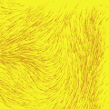 Crypto Flows Mint for 7 MATIC：使用 Perlin Noise 生成的 500 个流场的集合。 每次刷新模拟时，结果都完全相同。 您可以使用鼠标、P、向上和向下箭头与字段交互。 Ken Perlin 于 1983 年开发
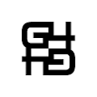 Crypto G4N9 Chests 回合制 NFT 战术 PVP 对战游戏 G4N9：Domination Origins 是一款回合制 2D 战术 NFT 游戏，玩家可以在其中互相对抗以成长 他们的军队以及赚取 G4N9 硬币和其他奖
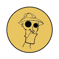 Crypto Gonzo Crypto Gonzos 是 1000 名 PFP 大使，致力于实现这个怪异、狂野、疯狂、令人兴奋、无拘无束，以及我们都在疯狂争夺的彻头彻尾的美妙 NFT 梦想。 这是一个非常特殊的时间和地
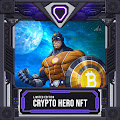 CRYPTO HERO NFT 加密英雄 NFT 合集,首次开采比特币纪念品并提议替换无法使用的第一个 BTC。具有收藏价值的高价值 NFT 创作。 Melouny 的 NFT 艺术品是值得拥有和收藏的特别物品。N
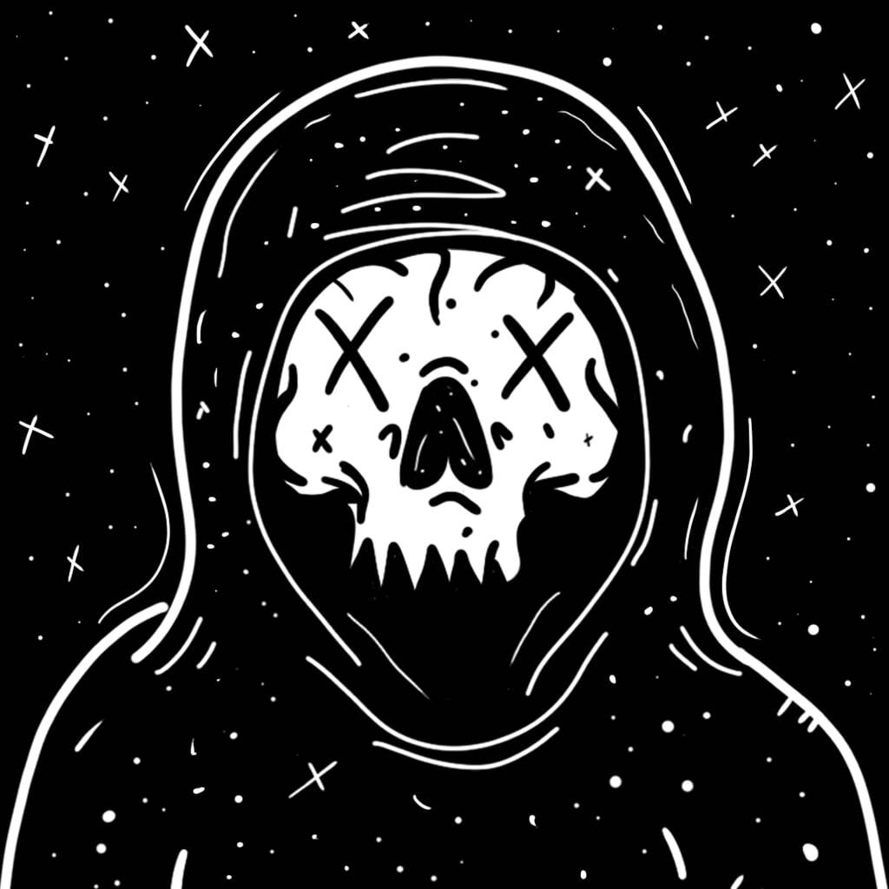 CRYPTO IS DEAD deadthings NFT 在过去 7 天内售出 1907 次。死亡物品的总销售额为 13.45 万美元。一个 deadthings NFT 的平均价格是 7.1 美元。共有 1,789 名死物所有者，总共拥有 6,666 个代币。 #ℂℝ𝕐ℙ𝕋𝕆𝕀𝕊
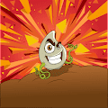 Crypto Punkin Patch Crypto Punkins 是随机生成的独特数字艺术品，用于创建一种 NFT 收藏品，可在游戏头像和个人资料图片中使用。 Crypto Punkins 仅 10 分钟就售罄！但是，您仍然可以在二级市场Ope
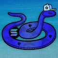 Crypto Snake Treasury 欢迎来到 Crypto Snake Treasury NFTs Collection！每个 Crypto Snake 都持有一个特定的 Crypto Coin/Token，每次销售都会建立一个金库。任何超过 0.0025 ETH 的报价都将被接受
Crypto Spirits NFT Crypto Spirits 是托管在以太坊区块链上的 1660 件可定制艺术品的集合。每件艺术品都提供双重功能，既是独一无二的收藏品，又充当节点，为 Spirit 平台提供深层效用；业界首
Crypto Squatches Crypto Squatches 是 10,000 个 Sasquatch 和 Bigfoot NFT 的集合，它们作为我们社区的会员和投票，以及空投、育种、独家 METAVERSE 活动和 SQUATCH 游戏。提升 NFT 空间作为一个集体是我们的倡议！ ▶ 什么是 Crypto S
Crypto Wheels Club (Official) 8,888 个独特的轮子艺术 NFT，配备破坏性火力。你会成为统治遗忘王国的人吗？CryptoWheels是 8,888 件独特的手工艺术品的集合，其中包括具有大规
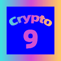 Crypto9 Official “Crypto 9”是存在于区块链/IPFS 上的 3650 个随机 Genesis 生成和独特派系 NFT 的集合。它也是 DSverse 和无限扩展未来的关键。故事从突出显示的岛屿开始，该岛
CrypToadettez CrypToadettez 是由女性艺术家和联合创始人 Girlz Wrld 创建的 6969 个 NFT 生活在以太坊区块链上的集合。Toadettez 正在寻找他们失散多年的男性同行 CrypToadz。
CryptoAdventuresWorld Characters 故事开始！我们的英雄是一个精灵，他在森林中醒来，渴望进行新的冒险。我们的英雄将前往 Gladian 营地，逃离迷宫，在那里他将帮助其他生物：半人马、Long
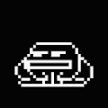 CrypToadz Ghostz CrypToadz ‘万圣节版’：CrypGhostz 是 CrypToadz 的衍生集合。 今天选择你的幽灵蟾蜍。 不要忘记 !vibe 和 !croakCrypGhostz 是 6969 种小型两栖生物的集合，它
CryptoAmulets CryptoAmulets是 1680 个 NFT，得到上师 LP Heng 的加持，为它们的主人带来祝福和好运！ LP Heng 生于 1927 年 8 月 11 日，居住在泰国素林府的 Wat Pattana Tham
CryptoApesNFT 欢迎来到 Crypto Apes 猿俱乐部，这是一个由 555 只猿组成的社会，他们根本不在乎别人对他们的看法。555 个猿是 120 多个独特字符的私人集合，每个猿的所有权证明作
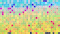 CryptoArte CryptoArte 是 2018 年的 NFT 和生成艺术收藏品，将以太坊区块链历史投射到色彩缤纷、独特且有意义的画作中。每个代币代表一幅给定的画作，并匹配其链上哈希。代币所有
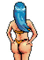 CryptoAssetsCollection 这些 CryptoAssets 是 NFT 比基尼辣妹的第一个集合。加密资产集合一套固定的只有 51 个宝贝供您收集（每个州 100 个），并且 #1 是美国最好的比基尼宝贝。它们于 2021 年年中推出


 是 Basic NFT Club的第二个项目。它包含 7777 CEYE 收藏品 在这个 NFT 收藏中，一只眼睛包含著名的加密爱尔兰语，而不是黑色或棕色爱尔兰语。. 它是生活在 (ERC-721) Matic 区块链上的独特数字收藏品。")